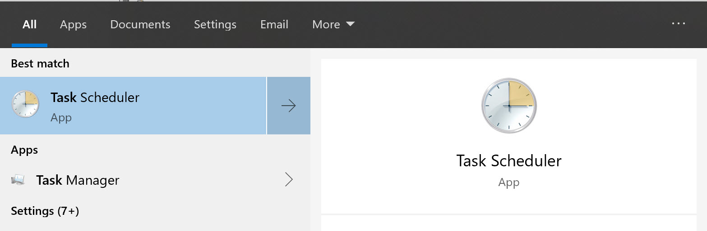

A few days ago, I blogged about Bing Desktop Wallpapers, a nice little tool you can install on your Windows Machine to enjoy some of the amazing views of the world.
Knowing these got stored on your local machine as JPEGs (C:\Users<user>\AppData\Local\Microsoft\BingWallpaperApp\WPImages), got me the idea to reuse these as “Teams Backgrounds” during video calls.
As the Bing Wallpaper gets updated every day, it would be nice to have a different image in Teams… every day. So instead of trying to remember to copy a Bing Wallpaper image, why not using a Windows Scheduled Task for this, based on a little PowerShell script?
The script could look like this:
> $today = get-date -format "yyyyMMdd"
>
>$source = "C:\Users\petender\AppData\Local\Microsoft\BingWallpaperApp\WPImages"
>
>$target = "C:\Users\petender\AppData\Roaming\Microsoft\Teams\Backgrounds\Uploads"
>
>$targetfile = $today+".jpg"
>
>copy-item -path "$source\$targetfile" -Destination $target -Force
Save this file with a PS1 (PowerShell Script) extension, e.g. “copybingtoteams.ps1”, and store it on your local machine (I used my Documents folder for this).
You could try and run this script manually to try it out, and see how nicely the “today’s” Bing Wallpaper gets copied to the Teams folder

So that works!
Next, to make this an automated step every morning when logging on to our machine, let’s use the Windows Task Scheduler as follows:
- From the Start Menu, search for Task Scheduler

- Once the console is open, Right click Task Scheduler Library, and select “Create Task”

- From the “General” tab, provide a descriptive name for your task e.g. “Copy Bing Wallpaper to Teams”, and keep the default setting to only use this when user is logged on.

- From the Triggers tab, create a new trigger, and specify the time you want to launch this script (e.g. 7am in the morning), and specify to run this every 1 day

- Under the Actions tab, is where we define the actual script to run.Set “Run a Program” as Action, and browse to the location where you saved the PS1-file.

- Nothing special to configure in the Conditions tab settings, although I did turn off the dependency to start this task only when connected to AC Power.

- I didn’t make any changes to the Settings tab, so we are good to go to Save our settings.
If you want to validate the task is going to run fine, you can manually launch it from the Task Scheduler console.

That’s it. Enjoy your new daily Bing Wallpaper in your Teams video calls!
Have a great day you all!
/Peter